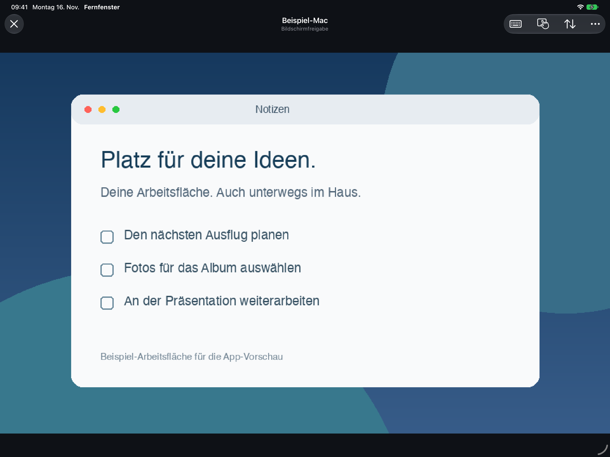

Bildschirmfreigabe für iPhone & iPad
Dein Mac.
Auf deinem
iPad.
Bediene deinen Mac vom iPad oder iPhone. Direkt mit seiner eingebauten Bildschirmfreigabe – im gemeinsamen lokalen Netzwerk.
App-Store-Veröffentlichung in Vorbereitung

Die eingebaute
Mac-Bildschirmfreigabe.
Dein vorhandenes
Mac-Benutzerkonto.
Keine zusätzliche Mac-App.
Kein Abo.
Mehr als ein kleineres Bild
Ein Fenster.
Passend zu dir.
Eine gut lesbare Arbeitsfläche auf deinem iPad. Oder ein Mac-Desktop, der sich mit deinem iPhone dreht.
Auf unterstützten Macs öffnet MacFenster einen nativen virtuellen Bildschirm. Er passt sich an die sichtbare Fläche deines Geräts an. Der physische Mac-Bildschirm bleibt separat.
Mit „Physischer Bildschirm“ wechselst du zurück. Beim Umschalten verbindet sich die App kurz neu.
Bedienung, die sich vertraut anfühlt
Tippen. Ziehen.
Weiterarbeiten.
Ein Tipp klickt. Zwei Finger öffnen das Kontextmenü oder scrollen. Vergrößere den Bildausschnitt und nutze einen Finger als Trackpad.
Mit externer Tastatur, Maus oder dem Trackpad des Magic Keyboard arbeitest du direkt am Mac. Sondertasten und häufige Tastenkombinationen sind in der App griffbereit.
Einige Systemkurzbefehle bleiben iOS und iPadOS vorbehalten.
Direkt verbunden
Nur dein Mac.
Und dein
Netzwerk.
Kein zusätzliches MacFenster-Konto, kein Vermittlungsserver. Beide Geräte gehören ins gleiche vertrauenswürdige lokale Netzwerk.
Am Mac freigeben
Öffne Systemeinstellungen → Allgemein → Teilen. Aktiviere „Bildschirmfreigabe“ und erlaube deinem Mac-Benutzer den Zugriff.
Deinen Mac finden
Erlaube MacFenster den lokalen Netzwerkzugriff. Dein Mac erscheint automatisch. Du kannst auch seine Adresse eingeben.
Mit deinem Mac-Konto anmelden
Verwende deinen Mac-Benutzernamen und dein Passwort. Auf Wunsch merkt sich der gerätegebundene Schlüsselbund das Passwort nach erfolgreicher Anmeldung.
Was brauche ich dafür?
Ein iPhone oder iPad mit iOS beziehungsweise iPadOS 18 oder neuer und einen Mac mit aktivierter Bildschirmfreigabe. Beide Geräte müssen im selben lokalen Netzwerk sein. Videoübertragung und virtuelle Bildschirme erfordern Unterstützung durch den Mac. Die App-Oberfläche ist auf Deutsch.
Kann ich mich auch von unterwegs verbinden?
MacFenster ist für das gemeinsame lokale Netzwerk gedacht. Ein Internetzugriff oder eine Verbindung zwischen verschiedenen Netzwerken wird nicht eingerichtet.
Wie werden meine Daten behandelt?
Die Verbindung geht direkt zu deinem Mac. MacFenster zeichnet deinen Bildschirm nicht auf. Passwortspeicherung ist freiwillig und an dein Gerät gebunden. Der klassische ARD/RFB-Rückfall verschlüsselt nicht den gesamten Datenstrom – verwende deshalb ein vertrauenswürdiges Netzwerk.
Was passiert, wenn ich die App verlasse?
Im Hintergrund endet die Sitzung. Du kannst dich anschließend erneut verbinden.
Sind Audio und Dateitransfer enthalten?
Auf unterstützten Macs kannst du Mac-Ton wiedergeben und Dateien bewusst senden oder empfangen. Die automatische Zwischenablage ist zunächst ausgeschaltet und wird in den Einstellungen aktiviert. Audio benötigt den unterstützten Videostream und ist bei voller Bildqualität nicht verfügbar.
Dein nächstes Fenster zum Mac.
MacFenster für iPhone und iPad · Veröffentlichung in Vorbereitung